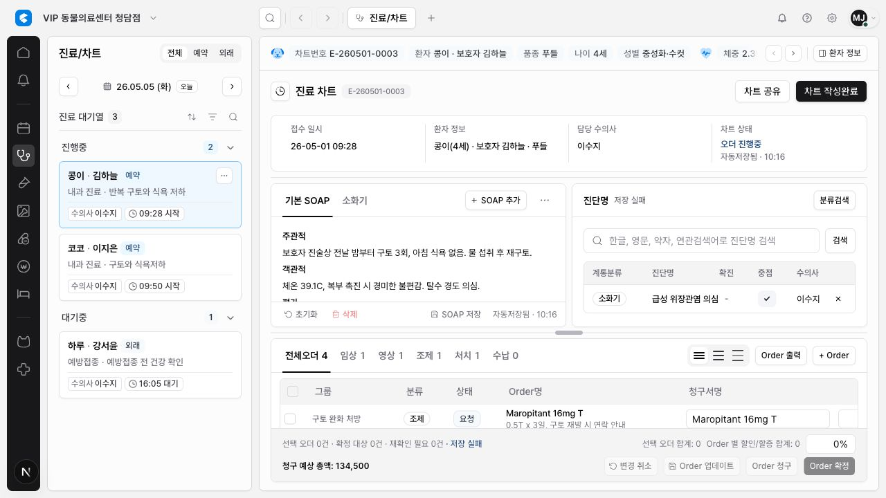

DEN-265 Chart/order Table Shared Primitive Adoption
요약
DEN-264에서 검증한 shared table header/cell text primitive를 진료/차트의 처방/오더 테이블에 제한 적용했다.
이 변경으로 차트 오더 테이블도 column role, resize 제외 기준, 1행/2행 텍스트 표시 기준을 shared API로 표현하게 됐다. 실제 정렬/필터 동작이나 전체 테이블 확장은 포함하지 않았다.
변경 내용
ChartOrderTableheader를 local column role metadata와EmrTableHeaderCell로 구성했다.- checkbox와 작업 column은
resize="none"으로 두고, scalar/data column만data-column정책을 기록했다. - group, 금액, 담당 수의사 같은 scalar text는
EmrTableCellText mode="one-line"을 사용한다. - 오더명과 진단명은 의미 손실이 큰 clinical text라
two-line-if-long으로 제한적 2행 preview를 허용했다. - 청구서명/수량 input, order draft update, Order 확정/청구, 삭제 dialog 흐름은 그대로 유지했다.
- DEN-265 work item을
docs/work/design-system/DESIGN-SYSTEM-PR-022-chart-order-table-shared-primitives.md로 기록했다.
Evidence
Browser QA는 mock auth 로그인 후 /w/clair-demo/treatment?scenario=kong-vomit&patientId=patient-kong&encounterId=encounter-kong-260501&modulePanel=open&aside=closed&right=closed에서 수행했다. evidence는 로그인 화면이 아니라 실제 진료/차트 처방/오더 테이블을 캡처한다.

검증 결과
npm run lint: 통과. 기존 warning 5개는 이번 변경 범위 밖이다.npx tsc --noEmit: 통과.npx playwright test tests/chart.spec.ts -g "chart workspace renders queue, history, SOAP, assessment, and orders": 1개 통과.npx playwright test tests/chart.spec.ts -g "chart (safety context and confirmation dialogs identify the active patient|order table edits quantity, commits draft changes, and deletes rows|workspace renders queue, history, SOAP, assessment, and orders)": 3개 통과.- Browser QA: chart/order route, table presence, header role, resize exclusion, one-line/two-line text mode, mock auth evidence 확인. Console warning은 기존 Tiptap duplicate extension warning 2건만 관찰됐다.
npm run docs:check: 통과.
범위 제외와 리스크
- 실제 sort/filter 동작은 추가하지 않았다.
- billing, customer, hospital admin, lab/imaging, inpatient 등 다른 테이블에는 확장하지 않았다.
- Supabase, DB migration, RLS, server enforcement, role policy, live persistence는 건드리지 않았다.
- 현재 브랜치에는 DEN-265 범위 밖의 workspace invitation/migration 변경이 별도로 감지됐고, 이번 작업에서는 수정하거나 되돌리지 않았다.
추천 다음 단계
Human Review에서 chart/order density와 2행 preview가 실제 진료 화면 스캔성에 맞는지 확인한 뒤, billing 또는 다른 dense table로 확장할지 별도 이슈로 판단한다.